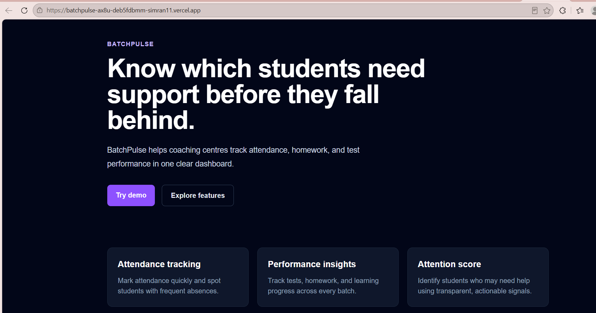
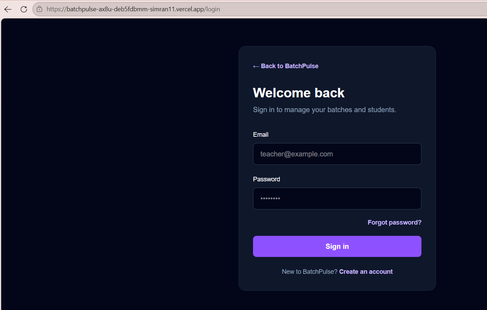
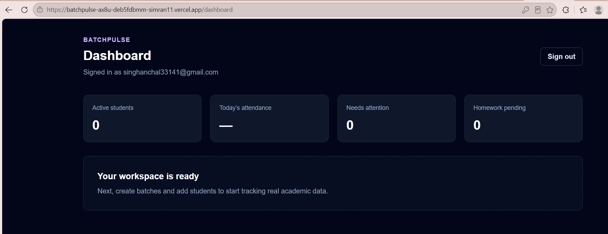

Currently in Development
AAS BatchPulse is a modern tuition and batch management platform built using Next.js, TypeScript, Tailwind CSS and Supabase. The application simplifies student management, batch organization, attendance tracking and daily administrative operations through a clean, responsive dashboard.

Full Stack Web Application
AAS BatchPulse is designed to simplify coaching institute management through a modern web platform. It enables administrators to manage students, organize batches and streamline academic operations using an intuitive dashboard. The project is currently under active development with new features being added continuously.
Framework
Frontend
Language
Backend
Application Screenshots

